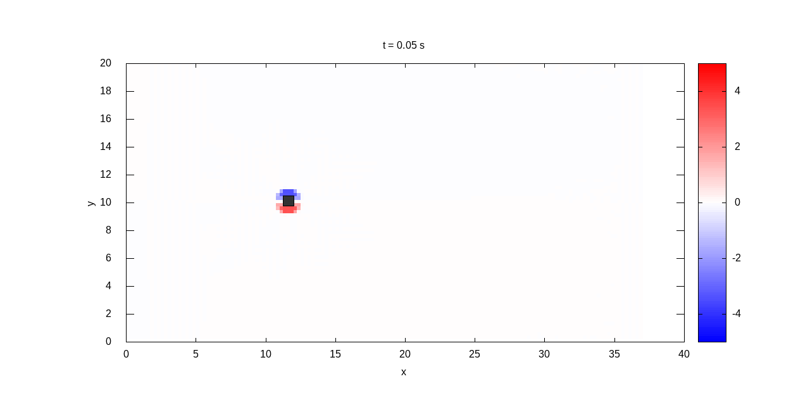

2D Incompressible Navier-Stokes Solver
Engineered a 2D fractional-step CFD solver on a staggered grid from scratch. Designed to accurately simulate complex fluid dynamics including the vortex shedding of a square cylinder and lid-driven cavity flows, with heavy emphasis on hardware-accelerated computing.
Square Cylinder & Vortex Shedding
The solver's capability was extended to external flows by simulating fluid passing over a square cylinder. The staggered grid formulation naturally handles the pressure-velocity coupling required to capture transient boundary layer separation.
The resulting simulation successfully visualizes the Von Kármán vortex street, demonstrating the solver's stability in capturing periodic vortex shedding behind the bluff body.

Transient vortex shedding (Von Kármán street) behind a square cylinder.
GPU Acceleration & Ansys Validation
To drastically reduce compute times for the square cylinder simulation, the Fortran codebase was parallelized. The outer loop iterated with a time step of 0.001 up to 200 seconds, with the momentum and Pressure Poisson solvers held to a strict convergence criteria (\(L_\infty\) norm > 1e-6).
- OpenMP: Achieved a 3.2x speedup over serial execution across multi-core architectures.
- OpenACC: Offloaded highly parallelizable kernels to the GPU, yielding a 4.05x speedup.
Solver accuracy was rigorously validated across multiple Reynolds numbers by benchmarking computed drag coefficients (\(C_d\)) directly against Ansys Fluent results.
OpenMP Speed Up Details
| Threads | Run time (s) | Run time (hrs) | Speed up |
|---|---|---|---|
| 1 | 11420 | 3.172 | - |
| 2 | 6543 | 1.818 | 1.745 |
| 4 | 4147 | 1.152 | 2.754 |
| 6 | 3072 | 0.853 | 3.717 |
| 8 | 3830 | 1.064 | 2.982 |
| 10 | 3533 | 0.981 | 3.232 |
| 12 | 3314 | 0.921 | 3.446 |
| 14 | 2960 | 0.822 | 3.858 |
OpenACC Observations
| N | Grid Points | Run time (s) | Run time (hrs) |
|---|---|---|---|
| 12 | 106,560 | ~3500 | 0.98 |
| 24 | 426,240 | ~8640 | 2.40 |
Hardware acceleration benchmarks showcasing up to 3.85x speedup across multi-core configurations.
Fractional-Step & Lid-Driven Cavity
The solver utilizes a fractional-step (projection) method on a staggered grid. An intermediate velocity field is first computed, followed by solving the Pressure Poisson Equation to enforce mass conservation.
The classic lid-driven cavity benchmark was used to initially validate the core vorticity and stream-function mechanics, successfully capturing the primary and secondary corner vortices at various Reynolds numbers.

Primary and secondary vortices in the lid-driven cavity flow.